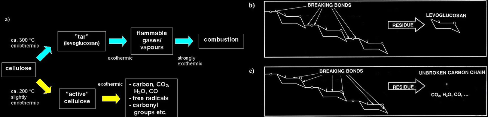

Combustion
Combustion is a high-temperature exothermic, elf-sustaining, redox chemical reaction between a fuel and an oxidant, usually atmospheric oxygen, that produces geseous products, in a mixture termed as smoke. Combustion is often a complicated sequence of elementary radical reactions. Solid fueld, such as wood, first undergo endotherming pyrolysis to produce gaseous fuels, combustion of which then supplied the heat required to produce more of them. Combustion of an organic fuel in air is always exothermic because the double bond of the O2 molecule is much weaker than other double bonds or pairs of single bonds, and the formation of stronger bonds in H2O and CO2 results in the release of energy. The bond energies in the fuel play only a minor role, as they are similar to those in the combustion products; e.g. the sum of the bond energies of CH4 is nearly the same as that of CO2.
The fuel bay be a gas, liquid, or solid. Combustion generally occurs in the gas phase. So if the fuel is a condensed phase, then some of the heat liberated by the combustion reactions must be consumed in vaporizing or pyrolizing the fuel. The term pyrolysis refers to the thermal degradation of a chemical. Pyrolysis is an endothermic process and is a common feature in the combustion of most solid carbnonaceous fuels. When heat is applied to a solid material, some of the heat is absorbed into the mass, while the rest of it dissipates to some degree. When the amount of heat applied to the solid can no longer be absorbed and exceeds its ability to dissipate, chemical breakdown and decomposition begin to occur. A self- sustaining burning reaction results and continues until it is either interrupted or runs out of fuel. When you overheat bread in a toaster to the point that the bread chards, you are observing the process of pyrolysis.
There are two types of combustion: flaming and smoldering. Flaming combustion referst to the formation of a hot column of gaseous combustion products that gives off visible light and sometimes smoke. Flaming combustion can be observed with flammable gases, flammable vaports, and combustible solids. Smoldering combustion is flameless combustion. It is often accompained by glowing char and the emission of smoke. Smoldering only occurs with solid fuelds which form porous solid chars.
Ignition and combustion of wood
The time-dependent process of starting with reactants and evolving in time towards a steadily burning flame is called ignition.
Ignition and combustion of wood is mainly based on the pyrolysis (i.e. thermal decomposition) of cellulose and the reactions of pyrolysis products with each other and with gases in the air, mainly oxygen. When temperature increases, cellulose starts to pyrolyse. The decomposition products either remain inside the material or are released as gases. Gaseous substances react with each other and oxygen, releasing a large amount of heat that further induces pyrolysis and combustion reactions. Pyrolysis and burning processes are illustrated in Figure 1.
Depending on environmental conditions (such as temperature, oxygen concentration, moisture, fire retardants, pH etc.), the pyrolysis of wood can proceed mainly on two pathways presented in Figure 2a. The tar forming pathway, taking place in a temperature of approximately 300 °C, is related to the “normal” burning of wood. In this case, pyrolysis produces a lot of tar including levoglucosan that decomposes easily into burning gases under the influence of heat (see Figure 2b). Thermal decomposition can take place also through char forming pathway. In this process, cellulose is first transformed to unstable, “active” cellulose that further decomposes so that reaction products are mainly carbon dioxide and water, and the “backbone” of cellulose containing a lot of carbon (see Figure 2c).
Ignitability
In order that wood can ignite, its temperature must rise so high that pyrolysis takes place strongly enough and the chemical reactions of combustion start. Therefore, the ignition of a wood product is dependent on the way of heating, that is, the thermal properties of the material, and the way of heat attack on the material.
The factors affecting the ignition of wood are well known in general: wet wood is difficult to ignite, thin pieces of wood ignite more easily than thick logs, and light wood species ignite quicker than heavy species. External factors having an influence on ignition are the intensity of heat exposure and its form of effect (e.g. the distance of flames from the surface).
The moisture content of wood has an effect on ignition mainly as a heat sink. Heating-up of the water and especially its vaporization consume heat energy. In addition, moisture increases the thermal inertia of the material.
The ignition of wood products with different thicknesses is dependent on their thermal thickness. A thermally thin layer ignites more quickly than a thermally thick material. When a thermally thin product is exposed to heat on one side, its opposite side heats up very close to the temperature of the exposed side by the time to ignition. In the case of a thermally thick product, the opposite side does not heat up but remains at the ambient temperature when the specimen ignites. The thermal thicknesses of practical products fall between thermally thin and thick. As a rule of thumb, a wooden product is thermally thin if its thickness is not more than a few millimetres, and thermally thick if its thickness is of the order of 10 mm or more.
The main products of combustion are carbon dioxide and water, but also other chemical compounds can be released. If these compounds are toxic, they impede the egress of occupants from a burning building. The main cause of intoxication in fires is carbon monoxide (CO). It is the dominating toxic combustion product from burning wood. The formation of CO is strongly dependent on ventilation: well-ventilated combustion produces considerably less CO (less than 10 g/ kg of burning material) than oxygen-controlled burning where CO production is of the order of 100 g/kg of burning material. Also the temperature is a significant factor, because it has a strong effect on the course of the chemical reactions in combustion.